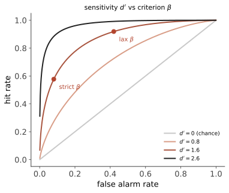

认知 I · 感觉与知觉
感觉是感受器把物理能量转成神经信号，知觉是大脑把这些信号组织成有意义的世界。两者的差距就是本页的全部内容——而这个差距远比直觉中大：你看到的不是视网膜上的图像，而是大脑对"外面最可能是什么"的最佳猜测。
1. 心理物理学：把感觉变成数字
心理学最古老的定量传统（Fechner，1860 年代）。三个概念：
绝对阈限：50% 试次能觉察的最小刺激（暗夜 30 英里外的烛光量级）。差别阈限（JND）：韦伯定律【稳】
——辨别力是相对的：手上拿 100 g 时能觉察 +5 g，拿 1000 g 时要 +50 g。生活推论：便利店涨价 1 元你有感、买房涨价 1 万你无感；这也是定价与折扣心理学的物理地基。
Fechner 定律 \(S = k\log I\)（感觉 ∝ 刺激的对数）与 Stevens 幂律 \(S = kI^n\) 是两个竞争的刻度（后者对不同感觉道给不同指数，更贴合数据）。分贝、星等都是对数刻度——人类感官天生是对数尺（🔗 信息论的 \(-\log p\)、光电站的 dB 在此有共同的感官根源）。
信号检测论（SDT）【稳】——本页最有迁移价值的工具：把"能否觉察"拆成敏感度 \(d'\)（真信号与噪声分布的距离）与判断标准 \(\beta\)（愿意在多不确定时说"有"）。四种结局：击中/虚报/漏报/正确否定。

🔗 SDT 是心理学送给整个数据科学的礼物：ROC/AUC 的原产地就在这里（ai 站的分类阈值、数学站统计 IV 的两类错误——"提高召回必然增加误报"是同一句话的三种方言）。
2. 视觉：从光子到物体
通路：视网膜（视杆管暗与运动、视锥管色与细节；中央凹密集）→ 视神经 → 外侧膝状体 → V1 → 腹侧流（"什么"：物体与面孔）与背侧流（"哪里/怎么做"：空间与动作）。双流分离的证据来自双重分离的病例（视觉失认症患者认不出物体却能准确抓取；视觉性共济失调相反）。
色觉的两阶段【稳】：三色理论（视网膜三种视锥）+ 拮抗过程理论（后续阶段红-绿/蓝-黄/黑-白拮抗）——两个"竞争"理论其实描述不同层级，负后像是拮抗阶段的直接证据。
格式塔组织原则【稳】：接近、相似、连续、闭合、共同命运——大脑主动把碎片组织成整体。知觉恒常性（大小/形状/亮度恒常）：视网膜像变了而知觉不变——这正是知觉是"推断"而非"复制"的证据。
错觉是特征不是 bug：Müller-Lyer、Ponzo、棋盘阴影错觉——它们暴露了大脑用的"先验假设"（光从上方来、平行线在远处会聚）。【摇】WEIRD 提醒：Müller-Lyer 错觉的强度存在显著跨文化差异（生长于"木匠世界"的人更易受骗）——连"最基础的视错觉"都不完全是人类普适的（第 02 页 WEIRD 论证的最硬例子）。
3. 知觉 = 预测（当代主线）
自上而下 vs 自下而上：期望、语境、动机显著影响知觉（听不清的歌词看了字幕就"听见"了）。当代整合框架是预测加工/贝叶斯脑：知觉 = 先验 × 似然的后验推断，大脑不断预测感觉输入、只把预测误差往上传（🔗 数学站贝叶斯、ai 站的生成模型；comfy 站的扩散模型与"感知即推断"是同一族数学）。
注意的代价【稳】：非注意视盲（看不见胸口捶打的大猩猩）与变化视盲——证明"看见"需要注意，"睁着眼"不等于"看到了"。实用后果：开车打电话（含免提）显著增加事故风险——瓶颈在注意而非手。
4. 其他感觉道速览
听觉（频率编码：低频靠锁相、高频靠基底膜位置——双机制；耳蜗植入即基于位置编码）；嗅觉（唯一不经丘脑直达边缘系统 ⇒ 气味与情绪记忆的特殊联结【稳】）；味觉五基本味；痛觉是知觉不是感觉——闸门控制理论 + 强烈的情境/期望调制（安慰剂镇痛有确凿的阿片系统机制【稳】）；前庭与本体感觉。
5. 反直觉清单
- 【倒】阈下广告操纵消费（第 06 页已破）；
- 眼睛的分辨率只有中央凹一小块高——你以为的"清晰视野"是大脑用扫视拼出来的叙事；
- 疼痛可以在无组织损伤时真实存在（慢性疼痛），也可以在严重损伤时暂时消失（战场镇痛）——疼痛的强度由脑决定，不由伤口决定。
下一页：外界不只是被看见，还会改变你——学习的两套基本机制。